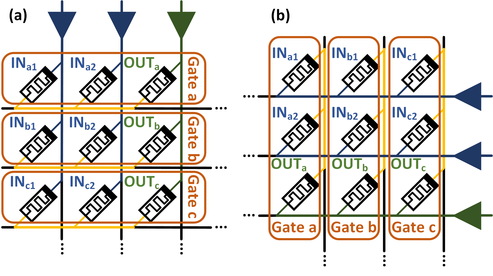
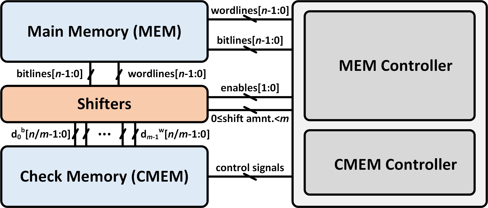
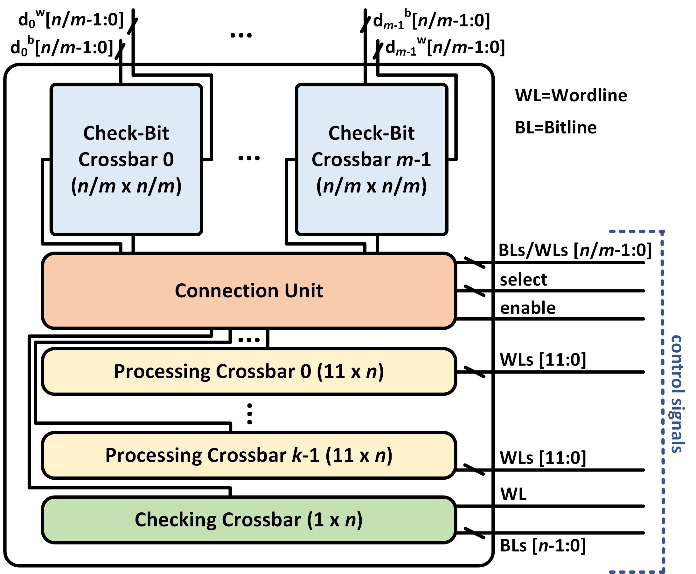

Efficient Error-Correcting-Code Mechanism for High-Throughput Memristive Processing-in-Memory
멤리스터 기반 PIM에서 데이터를 밖으로 꺼내지 않고도 메모리 내부에서 오류를 수정할 수 있는 혁신적인 대각선 ECC 기법이 등장했어요.
왜 멤리스터 PIM에서 오류 수정이 이렇게 어려운 걸까요?
현대 컴퓨팅 시스템에서 메모리와 프로세서 사이의 데이터 이동은 성능과 에너지 효율의 주요 병목이에요. 이를 해결하기 위해 PIM(Processing-in-Memory) 기술이 주목받고 있으며, 특히 멤리스터 크로스바 배열을 활용한 MAGIC(Memristor-Aided Logic) 방식이 유망한 대안으로 떠오르고 있어요. 이 방식은 메모리 셀 자체에서 논리 연산을 수행함으로써 데이터 이동을 최소화하고 높은 병렬성을 제공해요.
그러나 멤리스터 소자는 소프트 오류(soft error)에 매우 취약하다는 근본적인 한계가 있어요. 기존의 ECC(Error-Correcting Code) 기술은 메모리 외부에서 데이터를 읽고 처리하는 방식을 전제로 설계되어 있어서, 데이터를 외부로 꺼내지 않는 PIM 환경에는 그대로 적용하기 어려워요. 결국 신뢰성과 고성능 PIM이라는 두 가지 목표가 서로 충돌하는 상황이 발생해요.
멤리스터 PIM은 데이터를 메모리 밖으로 내보내지 않는 것이 핵심 강점인데, 기존 ECC는 이를 위반해야 동작해요. 이 논문은 '데이터를 읽지 않고도 메모리 내부에서 오류를 수정할 수 있는가'라는 근본 질문에 답하고자 해요.
어떻게 데이터를 꺼내지 않고 메모리 내부에서 ECC를 구현했을까요?
이 논문의 핵심 아이디어는 크로스바 배열의 대각선(diagonal) 방향을 따라 ECC 패리티 정보를 배치하는 새로운 데이터 구조예요. 기존 ECC는 행(row) 단위로 데이터와 패리티를 저장하고 외부에서 이를 읽어 처리하는 방식인데, 대각선 배치를 사용하면 MAGIC 연산의 병렬 처리 특성과 자연스럽게 결합할 수 있어요. 이를 통해 ECC 연산 자체도 메모리 내부의 멤리스터 논리 연산으로 수행할 수 있게 돼요.
구체적으로, 크로스바 배열에서 대각선 방향의 셀들이 같은 시간 스텝에 활성화되는 MAGIC 연산의 특성을 이용해요. 패리티 비트를 대각선으로 분산 배치함으로써 오류 감지 및 수정 연산이 추가적인 데이터 전송 없이 내부에서 완결될 수 있어요. 이 접근법은 Hamming 코드 기반의 SECDED(Single Error Correct, Double Error Detect) 방식과 호환되도록 설계되어 실용성도 높아요.
크로스바 배열의 대각선 구조와 MAGIC 연산의 병렬성을 결합하면, ECC 패리티 계산과 오류 수정을 메모리 내부에서 완전히 처리할 수 있어요. 데이터를 외부로 노출하지 않아도 신뢰성을 확보할 수 있다는 점이 이 논문의 가장 독창적인 기여예요.
실제로 얼마나 신뢰성이 향상되고 오버헤드는 얼마나 발생했을까요?
평가 결과, 제안된 대각선 ECC 기법은 계산 지연 시간을 약 26% 증가시키는 수준의 오버헤드로 신뢰성을 8배 이상 향상시킬 수 있었어요. 이는 데이터를 외부로 내보내는 기존 방식 대비 매우 경쟁력 있는 결과예요. MTTF(Mean Time To Failure, 평균 장애 시간) 기준으로 측정된 신뢰성 향상은 PIM 시스템의 실용적 배포 가능성을 크게 높여줘요. 오류에 취약한 멤리스터 소자의 한계를 소프트웨어나 외부 회로 없이 메모리 구조 설계만으로 극복했다는 점에서 의미가 커요.
HBM 설계에 어떻게 적용할 수 있나요?
HBM 및 DRAM 설계자 관점에서 이 논문은 매우 중요한 시사점을 제공해요. HBM은 이미 TSV(Through-Silicon Via) 기반의 고대역폭 구조 안에 ECC 로직을 내장하는 방향으로 발전하고 있는데, 이 논문의 접근법은 메모리 내부에서 연산과 ECC를 동시에 처리하는 미래 방향과 정확히 일치해요. 특히 PIM을 HBM에 통합하려는 최근 트렌드(예: Samsung HBM-PIM, SK Hynix AiM)에서 신뢰성 확보가 핵심 과제인데, 이 기법이 유용한 참조점이 될 수 있어요.
크로스바 배열의 대각선 데이터 배치 아이디어는 DRAM의 뱅크 구조나 HBM의 채널 구조에도 응용 가능성이 있어요. 특히 메모리 내 연산(near-memory 또는 in-memory computing)을 지원하는 차세대 HBM 아키텍처를 설계할 때, ECC 패리티의 물리적 배치 방식을 연산 흐름과 정렬(align)시키는 설계 철학은 면적 및 전력 효율 측면에서 큰 이점을 줄 수 있어요. 데이터 배치와 연산 순서의 공동 설계(co-design)가 핵심이에요.
이 기법은 MAGIC 기반 멤리스터 크로스바라는 특정 구조에 최적화되어 있어서, 기존 DRAM이나 SRAM 기반 PIM에 직접 적용하기 어렵다는 한계가 있어요. 또한 26% 지연 오버헤드는 초고처리량이 요구되는 AI 가속기 응용에서는 여전히 부담이 될 수 있으므로, 오버헤드 최소화를 위한 추가 최적화 연구가 필요해요.
Figure 갤러리



